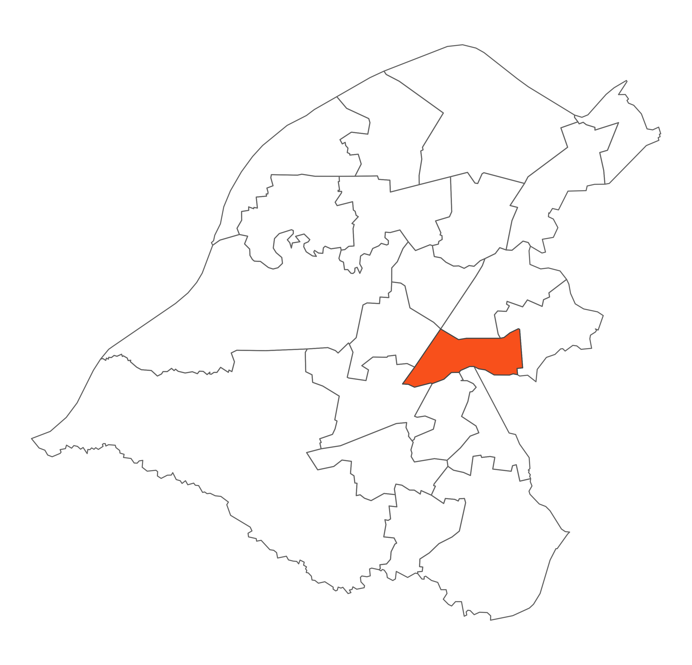

 Brooklands is a ward within the Sale area. It is a very attractive, affluent and pleasant place to live bounded by the A56 to the west and by Baguley Brook to the south. It has two distinct areas which are separated by the Bridgewater Canal and the Metrolink line. Brooklands ward has a Metrolink station and is the home of Sale Amateur Rugby Club. The area includes two parks, Walton Park to the west and Moor Nook to the east. Walton Park has a miniature railway, play areas, tennis courts, bowling greens and football pitches.